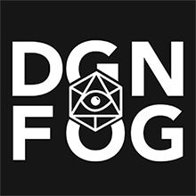

Community Partnerships¶
Foundry Virtual Tabletop is proud to have established partnerships with several other teams or creators who are producing fantastic software and content in the virtual tabletop space.
Dungeon Fog¶
Dungeon Fog is an online map maker & authoring tool for RPG game masters. With the extensive DUNGEONFOG Editor you can draw your RPG tabletop maps with just a few clicks – no more patching up map tiles! Create multi-level dungeons, terrain, or entire worlds in an instant. Generate your GM-Notes automatically and export or print high-res images and notes, or send a Fog of War version for your players to your TV!
Thanks to the hard work of community modders, Foundry Virtual Tabletop features a Dungeon Fog integration module which can automatically configure walls and doors for the fog of war and ambient lighting system automatically by exporting data directly from Dungeon Fog and importing into Foundry VTT. Learn more on the Featured Game Systems and Modules page.
To celebrate our partnership, you can use the discount code FOUNDRY when subscribing to the Dungeon Fog service for a 10% discount on the price of subscription! Visit https://www.dungeonfog.com/foundry to take advantage of this offer!